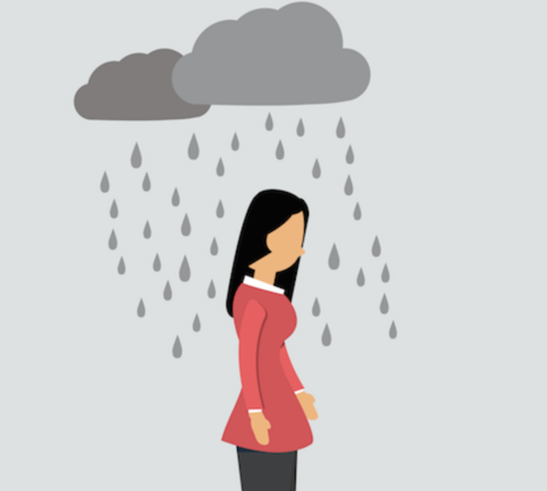

|
 |
 |
|---|
| Who does this affect? | Why is it a problem? | What can we do about it? |
|---|---|---|
|  | ||
| Depression affects approximately 19 million Americans, or 9.5% of the population in any given one-year period. At some point in their lives, 10%-25% of women and 5%-12% of men will likely becomeclinically depressed. In fact, it affects so many people that it is often referred to as the "common cold" of mental illness. Visit Source |
Major depression is the No.1 psychological disorder in the western world. It is growing in all age groups, in virtually every community, and the growth is seen most in the young, especially teens. At the rate of increase, it will be the 2nd most disabling condition in the world by 2020, behind heart disease. Visit Source |
When a family member or friend suffers from depression, your support and encouragement can play an important role in his or her recovery. However, depression can also wear you down if you neglect your own needs. These guidelines can help you support a depressed person while maintaining your own emotional equilibrium. Visit Source |
|
|
|
|---|